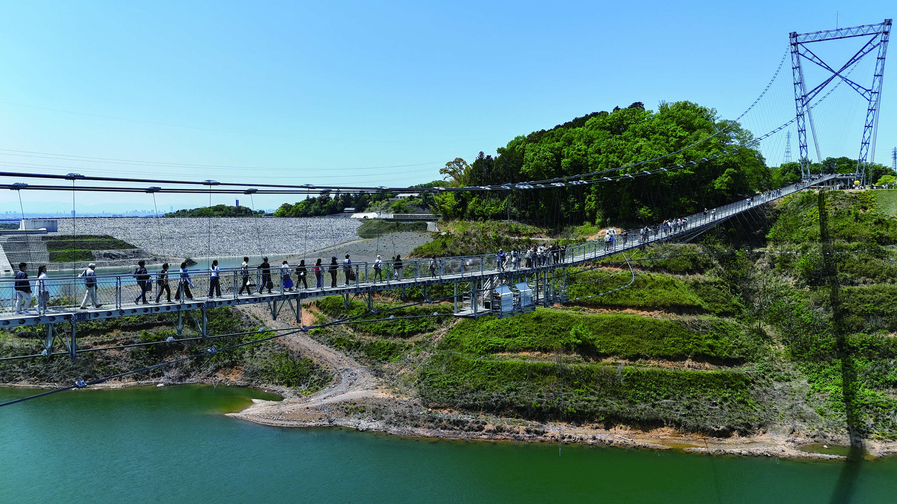
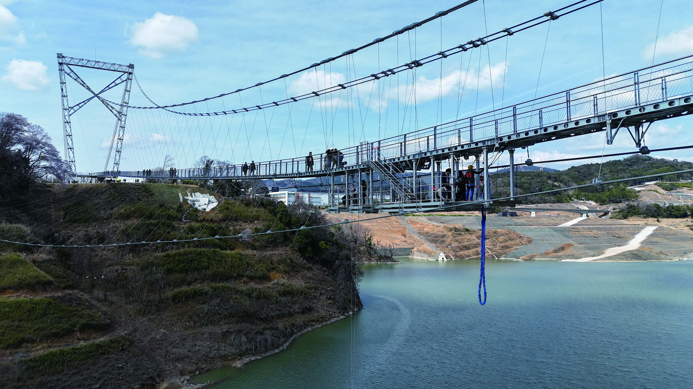
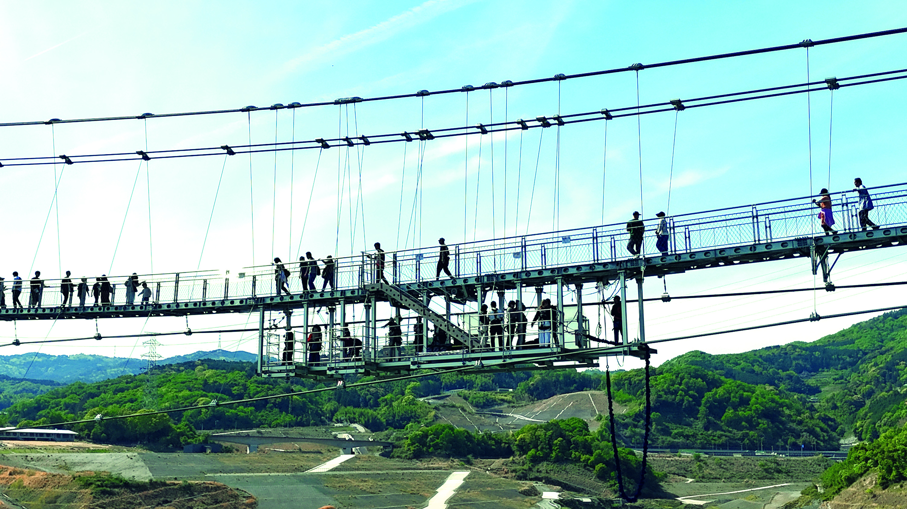

日本一長い
歩行者専用吊り橋
湖面からの高さ
足元は透ける
同時に橋上に
立てる設計容量
オープン約5ヶ月で
来場者10万人突破
「行けばよかった」ではなく「行ってよかった」に変わる体験が、ここにある。
STEP 01 — 橋のたもと
右岸側の主塔は高さ60m。下を見ると、吸い込まれそうな湖面。思っていた10倍、怖い。それでも——来た、やるぞ、という気持ちが同時に生まれる。

STEP 02 — 橋の中央部
格子状の床から、55m下の湖面が見える。風に吹かれると橋全体がゆっくり動く。「怖い！」と叫びたくなる。隣にいる人の手を、思わず握る。

STEP 03 — 渡り終えたとき
420m歩き切ったとき、達成感が押し寄せる。ダム湖と山並みと空——何もない、だからこそ美しい景色。夜はレインボーに輝く。




虹色7色に輝くライトアップが橋を包む。
昼とはまったく別の景色が、湖面に映る。
日帰りでは帰れなくなる夜。
天気ウィジェット
アウトドア天気.jp のiframeをここに埋め込みます
Googleマップ
大阪府茨木市 ダムパークいばきた
RESERVE NOW
来年の自分ではなく、今日の自分が行く。
GODA BRIDGEの空は、待っています。